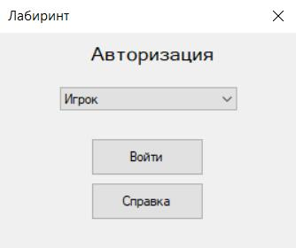
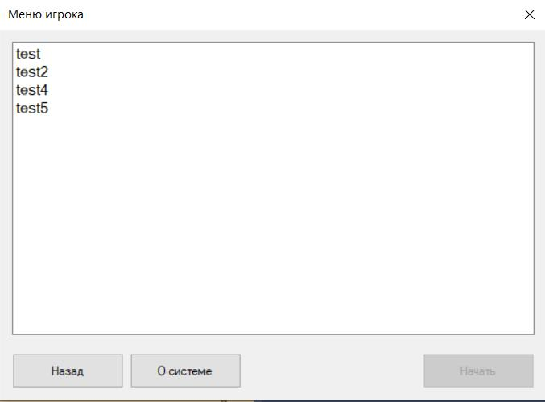
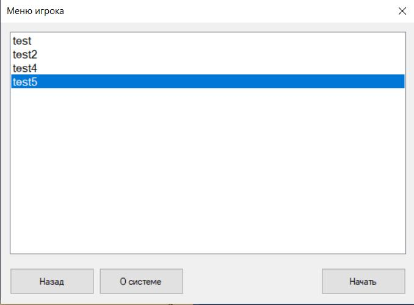
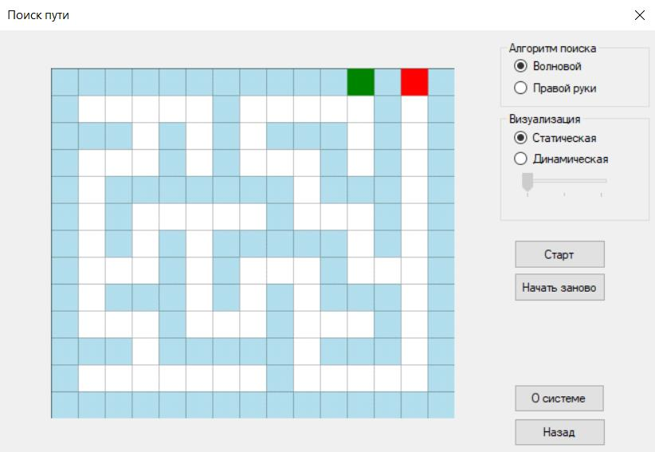
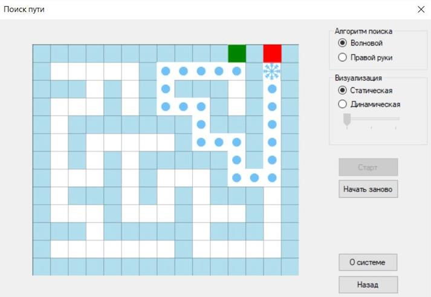

Справочная инфомация игры «Лабиринт». Режим игрока
Введение
Введение
Автоматизированная система «Лабиринт» предназначенную для генерации лабиринта и нахождения выхода из него. В системе предусмотрена работа в двух режимах: «Администратор» и «Пользователь(игрок)». Администратор может генерировать лабиринты, используя различные алгоритмы генерации. Игрок имеет возможность находить выход из лабиринта, выбирая алгоритм поиска пути и вид визуализации. И для администратора, и для пользователя предусмотрена визуализация работы программы.
Программа использует файловую систему для хранения лабиринта и его загрузки. Программная система совместима с Windows 7/8 и выше.
Вернуться наверх
1. Режим игрока
Администратор автоматизированной системы «Лабиринт» имеет возможность настраивать размеры лабиринта, выбирать тему, а также выбирать способ расстановки входа и выхода и выбирать алгоритм генерации лабиринта. Также ему доступно сохранение лабиринта в файл, просмотр справочной информации и информации о разработчиках.
Вернуться наверх
1.1 Авторизация в системе
После запуска системы откроется окно авторизации (рисунок 1). Для того, чтобы начать работу в системе в качестве игрока, пользователь должен из выпадающего списка выбрать роль "Игрок" и нажать кнопку "Войти" (рисунок 1). После входа в систему, открывается окно для выбора лабиринта, которое представлено на рисунке 3. Для просмотра справочной информации, необходимо нажать на кнопку «О системе», система откроект html страницу в установленном браузере. Для того, чтобы вернуться на форму авторизации и завершить работу в роли администратора, пользователю необходимо нажать на кнопку "Назад".

Рисунок 1 – Форма авторизации

Рисунок 2 – Окно выбора лабиринта
Вернуться наверх
1.2 Прохождение лабиринта
После выбора лабиринта на форме, становится доступна кнопка "Начать" (рисунок 3), при нажатии на которую открывается окно с выбранным лабиринтом (рисунок 4).

Рисунок 3 – Форма выбора лабиринта

Рисунок 4 – Форма прохождения лабиринта
Игроку доступно два алгоритма поиска пути: "Волновой" и "Правой руки", по умолчанию выбран "Волновой". Кроме того, пользователь может выбрать вид визуализации. При выборе динамической визуализации, игрок может менять скорость прохождения лабиринта. После выбора алгоритма нахождения пути и способа визуализации необходимо нажать кнопку "Старт". При нажатии на кнопку "Старт" осуществляется поиск выхода из лабиринта, согласно выбранному алгоритму. На лабиринте отображается путь персонажа. Вид персонажа зависит от выбранной темы (рисунок 5). Также пользователь может нажать на кнопку "Начать заново", в этом случае предыдущая лабиринт примет первоначальный вид и пользователь сможет заново найти путь (рисунок 6).

Рисунок 5 – Форма прохождения лабиринта. Поиск выхода из лабиринта
Рисунок 6 – Форма прохождения лабиринта. Начать игру заново
Вернуться наверх